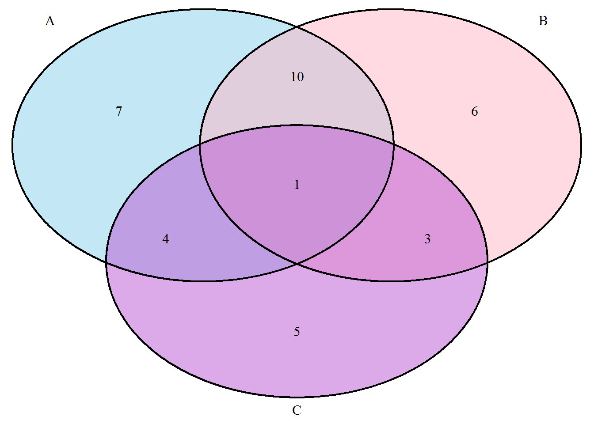

Chapter 6 Venn Diagrams
Graphing the Venn diagrams in R will require package call “VennDiagram”. To install that package, issue the command:
install.packages("VennDiagram")
After the package is installed, we’ll have to load it into R using require(VennDiagram) or library(VennDiagram). You will likely see some output on the screen in red colored text showing you what functions or packages have been loaded and possibly giving some warning messages. You can mostly ignore this text unless it explicitly gives an error saying the package is not found or was not loaded. Usually, it will be clear if that is the case.
# note that before issuing this command,
# you need to have the "VennDiagram"" package installed"
# you caninstall it with `install.packages("VennDiagram")`
library(VennDiagram)Now that the Venn diagram package and its associated commands are loaded, we can draw a Venn diagram:
grid.newpage()
draw.pairwise.venn(area1 = 25, area2 = 30, cross.area = 12,
category = c("A","B"),
fill=c(rgb(1,0,0),rgb(0,1,0)),
alpha=c(0.25,0.25))
You’ll notice that R prints to the screen some information about the polygons that have been drawn. You don’t need to pay attention to this information about the polygons. From the figure above, we can see that \(|A|\)=25, \(|B|\)=30, and \(|A\cap B|\)=12.
Venn diagrams can also be drawn with three sets:
grid.newpage()
draw.triple.venn(area1 = 22, area2 = 20, area3 = 13,
n12 = 11, n23 = 4, n13 = 5,
n123 = 1,
category = c("A", "B", "C"),
fill = c("skyblue", "pink1", "mediumorchid"))